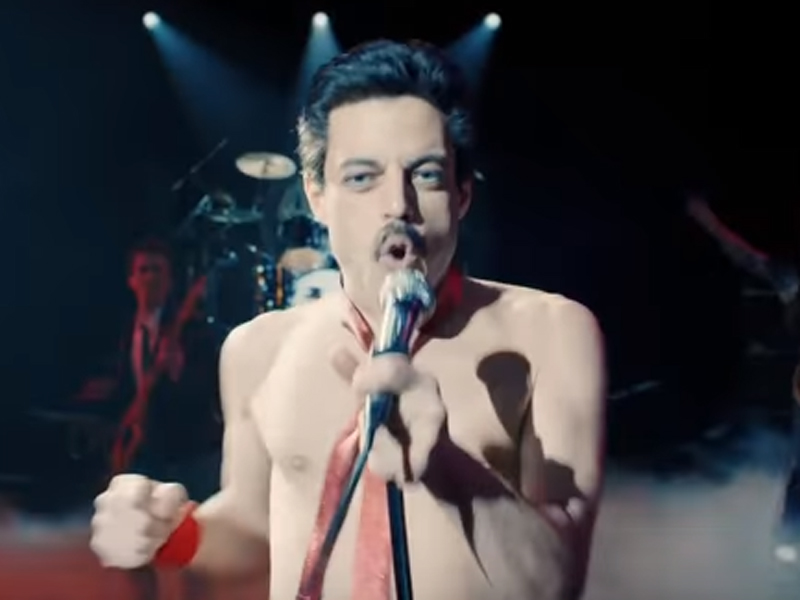

Bohemian Rhapsody é criticado.
Bohemian Rhapsody está conquistando bons números na bilheteria, mas nem todos ficaram muito felizes com a forma como Freddie Mercury foi retratado no filme.

GEORGE EZRA APRESENTA NOVO SINGLE E COVER DE JUSTIN BIEBER
O cantor apresentou duas faixas no programa, sendo elas o seu atual single, e um cover incrível de “Love Yourself”, cantada originalmente por Justin Bieber. Ambos os vídeos podem ser vistos no fim da publicação.
Sonho dele era tocar bateria com o AC/DC
Durante conversa com a Forbes, Dave Grohl revelou que gostaria de tocar bateria no AC/DC, mas seu sonho foi interrompido com o retorno de Phil Rudd à banda, que aparentemente tem de volta o antigo baterista e o vocalista Brian Johnson.